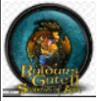

Baldur's Gate II: Shadows of Amn es un videojuego de rol desarrollado por Bioware en el año 2000 para PC. Shadows of Amn es otra historia basada en el famoso juego de rol Dungeons & Dragons. Lo mejor, de lo mejor.
|  | Desarroladora | Plataforma | Fecha Lanzamiento | Modos de juego | Género |
| Bioware | PC | 24 de septiembre del 2000 | Un jugador | Rol |
Ancla
Baldur’s Gate fue mucho más que la enésima adaptación de Dungeons & Dragons a los videojuegos: el RPG de BioWare supuso un sonoro punto de inflexión dentro del género,transmitiendo sensaciones propias
-y casi exclusivas- de los juegos de papel y dados con una naturalidad insólita. Introduciéndonos en los Reinos Olvidados como jamás se había hecho hasta entonces.
A simple vista podría pasar por uno de tantos juegos de rol en perspectiva isométrica. El típico en el que creas tu personaje, reúnes un equipo,
consigues poderosas armas y hechizos y salvas el mundo (en este caso, la costa oeste de Faerûn) de una poderosa amenaza.
Y, no nos vamos a engañar, en esencia eso es lo que ocurre a lo largo del juego. Entonces, ¿qué lo hace especial?…